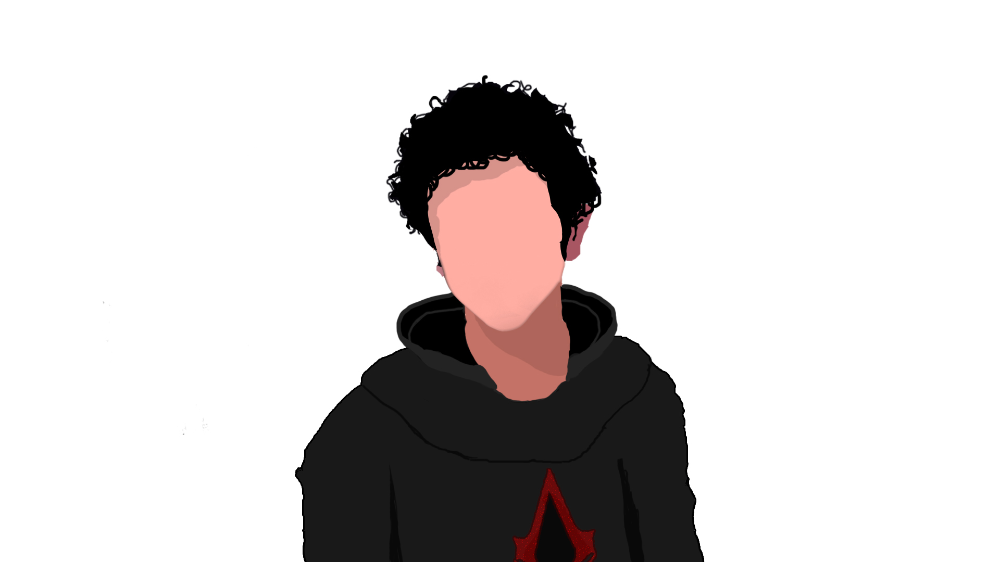

Aaditya Khati
Experienced Security Penetration Tester with a demonstrated history of working in the computer and network security industry. Skilled in Network Security, Windows and Linux Operating System, Troubleshooting, PHP, WordPress and various Security Testing tools and Techniques. Strong engineering professional with a Bsc. in Networking and IT Security focused in Networking and IT Security from London Metropolitan University.
